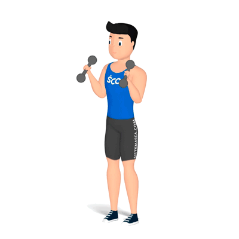
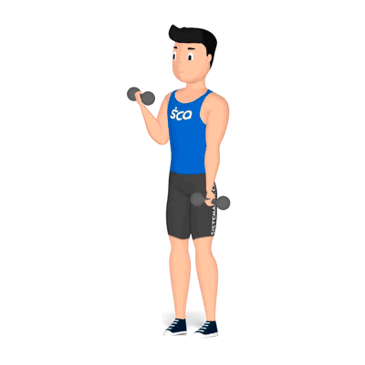

Dicas: Suas mãos devem se manter distanciadas de modo que fiquem
alinhadas com seus ombros e lembre-se de manter as escápulas
firmes no banco. Não deixe a barra descer até o peito, isso
promove relaxamento dos músculos.
Supino Inclinado
Repetições: 3x12
Grupo muscular
Dicas: As recomendações são parecedias com as do supino reto,
escápulas retraidas, pegada alinhada ou ligeiramente maior que os
ombros e desça a barra sempre em direção a porção superior do
peitoral.
Supino Halteres
Repetições: 3x12
Grupo muscular
Dicas: As recomendações são iguais ao supino inclinado, porém no
modelo com halteres deve-se aumentar a amplitude de abertura dos
braços permitindo maior ativação do peitoral.
Rosca Scott
Repetições: 3x12
Grupo muscular
Dicas: Os exercícios de rosca para ativação do bíceps devem ser
feitos flexionando os cotovelos e os mesmo colados a lateral do
seu tronco. Mentenha os cotovelos firmes as laterais de seu corpo
e contraia bem os bíceps.

Rosca Martelo
Repetições: 3x12
Grupo muscular
Dicas: Aqui as dicas são as mesmas da rosca scott, mantenha os
cotovelos colados a lateral do corpo e contraia bem o bíceps
retornando ao estado inicial de forma controlada.

Rosca Alternada
Repetições: 3x12
Grupo muscular
Dicas: Cotovelos colados ao corpo, contração de bíceps e flexão de
cotovelos !